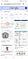

Words pin ideas, concepts, creatures and things.
We, human beings, since we got the ability to talk keep assigning words to everything we would communicate but we thought falsely that we don’t leave our DNA or Empreinte on the words we use. I was brainwashed like that buy working on an analytical content product allowed me to connect with great professors, entrepreneurs, geeks scientist and every kind of people who use words and write about words and us in books. I also was well prepared because I care about a book I do believe has the power of change and a remedy to every matter.
Words are there to pin another things like stamps if we study them well they will not tell us only our history what they already did but they will give us more ability to create better things for everybody benefits like this connections did for me.
Words are stamps why this search
